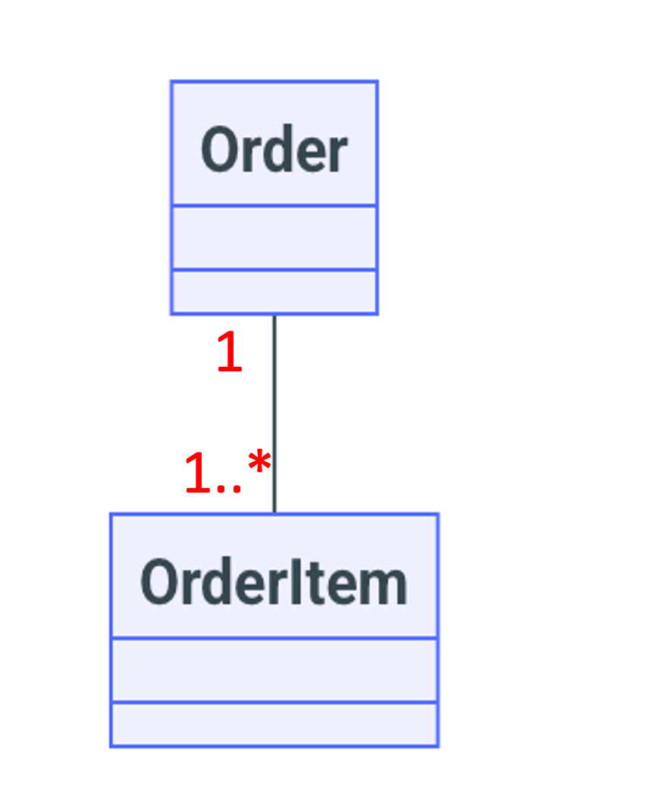
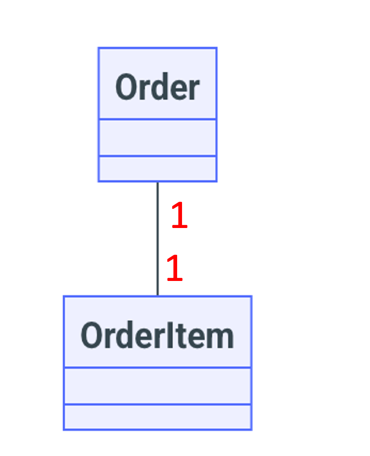
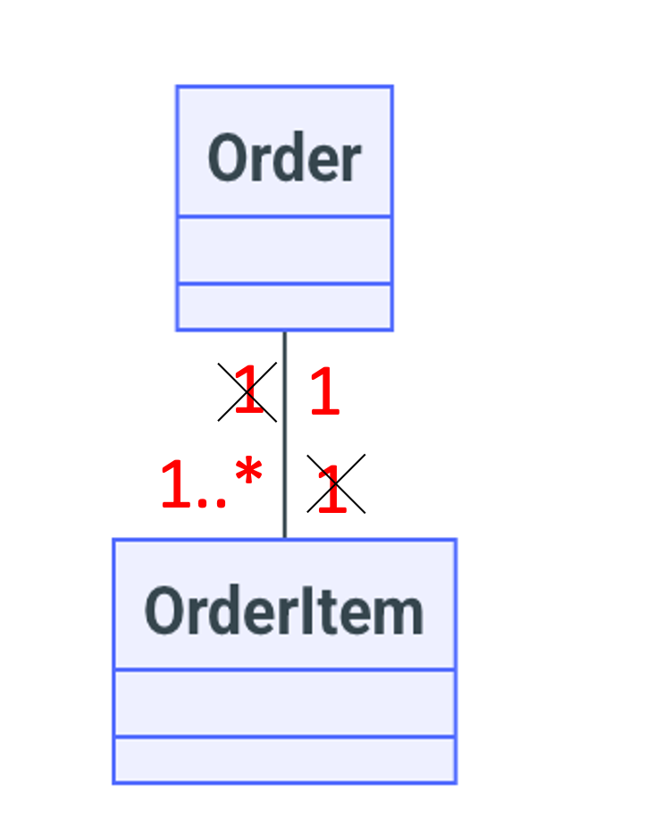
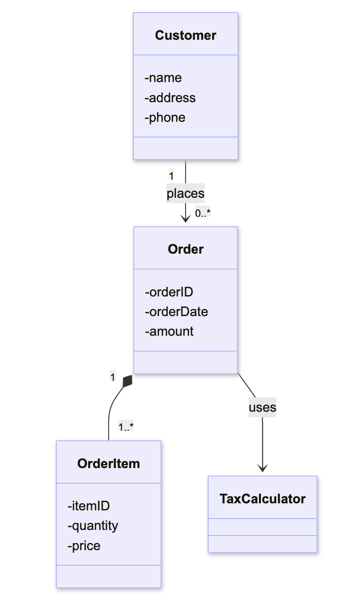
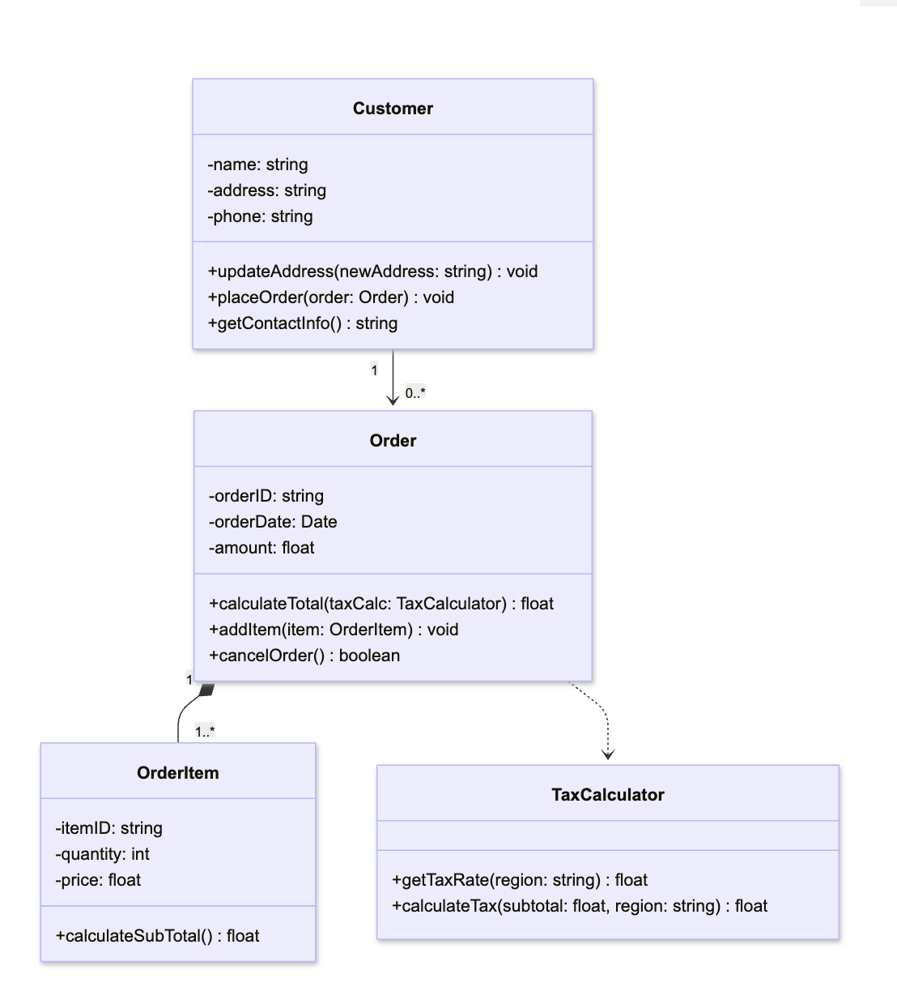
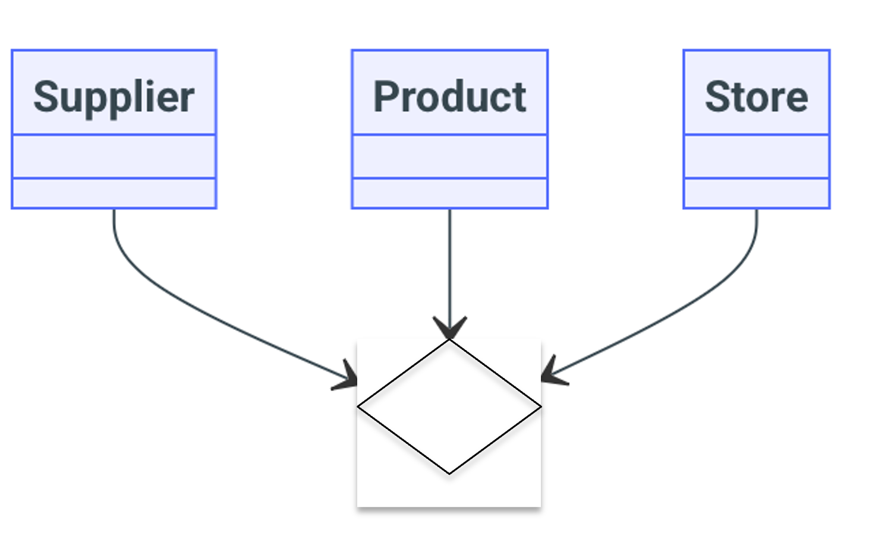
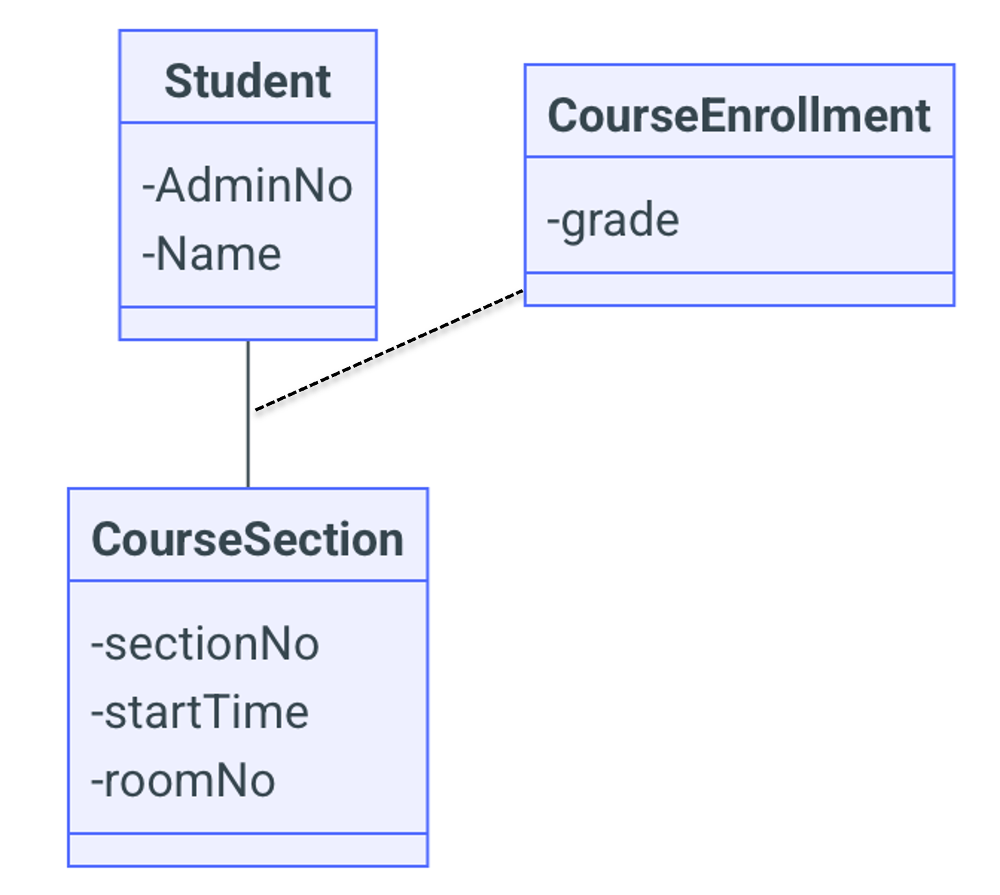

50.003 - Class Diagrams¶
Learning Outcomes¶
By the end of this unit, you should be able to
- Explain the concept of Problem Domain.
- Explain the concept of Domain model.
- Explain the Relationships, Associations, Multiplicity and Association class
- Derive a Domain Model for a given problem.
Problem Domain¶
Understanding problem domain is essential before designing a software system to solve a given problem. The problem domain refers to the specific area of expertise or application relevant to the problem being addressed. It includes the real-world concepts that users interact with such as products, orders, invoices, customers, deliveries etc.
When it comes to developing software system, we need to identify the context of the system being developed. For example, if we need an order management system, the context defines the entities in the order management like products, order, invoices etc.
The context helps to define the scope of the system being developed. For example, for an order management system, we may not consider the venue as a part of the system.
Domain Concepts¶
We can visualize domain concepts in categories. This will help defining system boundaries and identify entities and relationships separately for the problem domain model described next.
Problem Domain Model¶
A Problem Domain Model is a structured representation of real-world business concepts. It serves as a foundation for understanding the system's environment and helps guide requirements and design decisions. The domain model stems from the refined scope in "Problem Domain" defined previously.
Problem domain model defines the concepts in problem domain as entities and relationships. It may take the form of simple diagrams, glossaries etc. which enhances clarity of the problem domain identified. Problem domain model is still an abstract representation which need to be filled with more details.
Domain Class Diagram¶
Domain class diagram formally shows a problem domain model. Each class represents an entity in the problem domain model and the corresponding attributes (Ex: In an order management system - Customer, Order). Class diagram also shows the relationships between the domain classes (Ex: In an order management system, Customer places Order shows the relationship between Customer and Order). Note that behaviors like "register (customer), cancel (order)" are not modelled in domain class diagram. In contrast, solution class diagram (different from domain class diagram) models entities and relationships of the system implemented, with added details of the entity behavior.
Domain Class Notation¶
Class diagram represents classes with a rectangle with 3 splits. The text in the splits (from top to bottom) represent class name, class attributes and behaviors respectively.
Attributes are variables denoting specific details about the class. In case of domain class diagram, the bottom is empty since the behaviors are not represented.
The following example shows three domain classes in an order management system.
---
title: Order management system
---
classDiagram
class Customer{
name
address
phone
}
class Order{
orderID
orderDate
customer
amount
orderItem
}
class OrderItem
OrderItem : itemID
OrderItem : quantity
OrderItem : priceNote that attributes are variable names not the exact values. It is not necessary to include a unique identifier as an attribute. For example, Customer class has only name which is not a unique attribute while other classes contain corresponding Ids.
Domain Class Relationships and Notation¶
There can be different relationships among the domain classes.
Inheritance - When a class A is a kind of class B, we say that "class A inherits class B". See the notation below.
classDiagram
classA --|> classBFor example, we can add a new class (onlineOrder) and show that it is another Order type. It is a good practice to omit the inherited attributes in the child class diagram.
---
title: Order management system
---
classDiagram
OnlineOrder --|> Order
class Customer{
name
address
phone
}
class Order{
orderID
orderDate
customer
amount
orderItem
}
class OnlineOrder
OnlineOrder : platformName
class OrderItem
OrderItem : itemID
OrderItem : quantity
OrderItem : priceAssociations - Associations can be any relationship but inheritance. Any number of classes can participate in an association. Most common association is binary association.
These binary associations can be classified into part of relationships and regular relatioships.
- Part-of-relationships - Given two objects A and B, ask yourself the question,
Is A made up of B(s)?If the answer isyes, then we say Bis part ofA or AcontainsB.
Example: We need OrderItem to define Order. Therefore, OrderItem is part of Order.
There are two types of is part of relationships. The types are defined based on the lifeline of the smaller part.
- Composition - If the smaller part is created for the sole purpose of creating the larger part, we call it
composition. In this case, deleting the larger part will automatically delete the smaller part too.
Example: OrderItem is created for the sole purpose of creating an Order. When the Order is deleted, OrderItem is also deleted. Therefore, Order and OrderItem has a Composition relationship. This relationship is shown by a solid line ending with a dark diamond. is part of relationship is read towards the direction of the diamond.
classDiagram
classA --* classB- Aggregation - if the smaller part is created independantly and can stay even after larger part is deleted, we call it
aggregation.
Example: A DeliveryBatch is madeup of Orders. However, Orders are born independently and even if the DeliveryBatch is canceled, Orders are waiting to be in another DeliveryBatch. Therefore, DeliveryBatch and Order has an Aggregation relationship.
This relationship is shown by a solid line ending with a hollow diamond. is part of relationship is read towards the direction of the diamond.
classDiagram
classA --o classB- If A and B are related but there is no part of relationship, we say that A
associateswith B. We can use a meaningful name for the association.
Example: Order has the customer as an attribute. but Order is not made up of Customer.
This can be shown by a solid line (direction is optional). Usually direction is shown to indicate the reading direction of the relationship. Depending on the relationship unidirectional or bi-directional arrows can indicate the reading direction.
classDiagram
classA -- classBMultiplicity in Associations and Notation¶
Given a binary association classA -- classB, for a chosen object in classA, it can interact with zero or more objects in classB. This is the most general case. The multiplicity labels defines precise lower and upper bounds for the number of associated objects in classB.
Consider the association between Order and OrderItem. Given 1 Order, there can be 1 or more Order items assuming Order is created only when there is a non empty list of OrderItems. This is represented in the Fig: 1, with "1" at the Order end and "1..*" at the OrderItem end. "1..*" means the minimum number of OrderItems is 1 and the maximum number of OrderItems can be any number (represented by the placehoder "*")
Similarly Fig: 2 denotes what is the minimum and maximum number of Orders exist for 1 OrderItem. Since there is exactly one Order for a given OrderItem, we show "1" at the Order end which is short hand for "1..1" (meaning min of 1 and max of 1).
 |
 |
|---|---|
| Fig: 1 OrderItems per Order | Fig: 2 Orders per OrderItem |
To obtain the combined multiplicity diagram we remove the Order end "1" from Fig: 1 and OrderItem end "1" from Fig: 2. Then we have the combined multiplicity diagram as Fig 3 below.
 |
|---|
| Fig: 3 Combined Multiplicity |
A full Domain class diagram example including multiplicities is shown below.
 |
|---|
| Fig: 5 Full Domain Class Diagram |
Extending Domain Class to Simple Solution Class¶
The main idea of extending domain class to solution class is that it represents the class design going in the code. However, solution class diagram still does not pair with a specific programming language.
Behaviors¶
Main addition for Solution class diagram in contrast to Domain class diagram are behaviours (or methods in OOP context).
Data Types¶
Data Types of the attributes, method arguments, returns values are set. Some data types can be other classes. For example, Order class can have customer object as attribute.
Visibility is also indicated in solution class diagrams. Public visibility is indicated by + sign and private visibility is indicated by - sign. Following the object oriented design, attributes have - as prefix and methods have + as prefix. Please note the newly defined class of TaxCalculator.
classDiagram
direction TB
%% Relationships between classes
class Customer{
-name: string
-address: string
-phone: string
+updateAddress(newAddress: string) void
+placeOrder(order: Order) void
+getContactInfo() string
}
class Order{
-orderID: string
-orderDate: Date
-amount: float
-items: OrderItem
+calculateTotal() float
+addItem(item: OrderItem) void
+cancelOrder() boolean
}
class OrderItem{
-itemID: string
-quantity: int
-price: float
+calculateSubTotal() float
}
class TaxCalculator{
+getTaxRate(region: string) float
+calculateTax(subtotal: float, region: string) float
}Refined Associations¶
Inheritance and Part-of relationship identification remains the same. However, the code examples implies how to implement aggregation and composition.
- Inheritance
In solution class diagrams, regular associations can be refined in two ways.
- Attribute level - If A associates to B and B object is an attribute of A, then we have a navigable association. Navigability means that From class A, we can navigate to class B via the object B.
classDiagram
classA --> classB- Method Parameter level - Instead of having as an attribute, we can have object B as a parameter of a method of class A. This means Object B is temporarily used by A. We call it a dependancy.
Dependancy is a linkage among different classes implying one class uses/depends on another class. Even a temporary action like passing an object from classA to a method of classB is considered as dependancy. This can be denoted by a dotted arrow drawn from classB to classA, which is read as "classB uses classA".
Here is a full example (with multiplicative constraints) on how the associations are refined in solution class diagram. Note that dependency relationships do not require multiplicity constraints.
Also note that multiplicity constrains help to identify whether we need to allocate a single variable or list to represent an attribute in code.
 |
|---|
| Fig: 5 Full Solution Class Diagram |
Non binary Associations and Notation¶
All the associations we covered above are binary associations where exactly two classed were associated. There are other types of associations such as Unary, Ternary, and most generally n-ary.
Here, we precisely define the association between class A and class B in terms of class A objects and class B objects. Association between class A and class B means, some objects of class A associate with one or more objects of class B.
- In Unary association a class associates with itself. In other words object of a given class can associate with another object of the same class. It is shown by a self directed edge.
- In Ternary association, three classes can associate together. In other words 3 objects from each class can be associated.

In the above example, an association can be defined as a supplier supplies a product to a store.
Association Class and Notation¶
Some times, the association between two classes have some details worth modelling in the class diagram itself. This modelling is done via a separate class connected via a dashed line to the association link.
An example could be an existing association between a Student and a CourseSection. The student's grade for a CourseSection is neither an attribute of Student nor an attribute of CourseSection. The grade attribute belongs to the association between the Student and the CourseSection which we name as CourseEnrollment.

The following table shows the different types of multiplicities that can be represented in a class diagram.
| Multiplicity | Meaning |
|---|---|
| 1 | One and only One |
| 1..X | Min 1 and Max X |
| 1..* | Min 1 and Max many |
| 0..X | Min 0 and Max X |
| * | Min 0 and Max many |
Derive a Domain Class Diagram¶
- Select a use case description
- Map class names for Primary and Secondary actors.
- For each step in operational flow, Identify the concepts represented by the system. Each concept will map to a class name. Some concepts may contain sub concepts. These can be composition classes.
- Note down the existence of inheritance and associations on the fly.
- Write down the attributes of the identified classes. You may find more associations after attributes are defined.
- Refine the associations as aggregation, composition or regular association.
- Figure out the multiplicities.
Extend a Domain Class Diagram to a simple Solution Class Diagram¶
- Add the data types for attributes
- Go through use case operational flow and identify behaviours
- Map each behaviour to a class. (check whether it is get method or set method, and check which live object's attributes are accessed)
- Finalize data types of method arguments and return values
- Differentiate between dependancies and regular associations (decide on temporary usage or keeping as attribute)
Note: A comprehensive solution class diagram includes UI and Controller classes too. We discuss it next week.